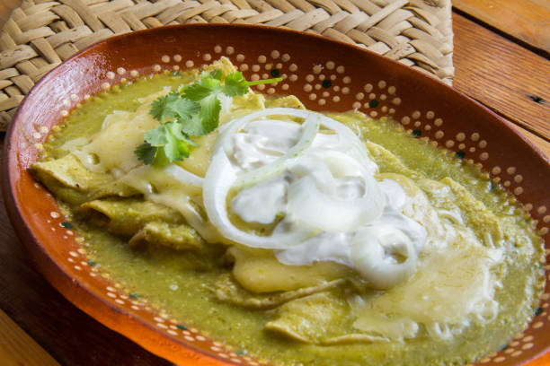

Patrick's Enchiladas

Description
Enchiladas are a delicious Mexican dish that are super simple to make!Growing up I would always order them at restaurants for their
tangy flavor and gooey texture. Enchiladas can come in many different shapes, colors, sizes, flavors. This recipe will teach you how to make my personal
favorite, green chicken enchiladas. This recipe is quick, simple, and filling. As a father myself, I prioritize the big family meal. With
these enchiladas, you wont have to worry about anyone going to bed hungry. So grab your grocery list, and you'll be making restaraunt quality enchiladas
tonight!
Ingredients
- 10 Medium Flour Tortillas
- Las Palmas Large Green Enchilada Sauce
- 2lbs Chicken Tenderloin
- 1lb Shredded Mexican Cheese
- 1 can Black or Pinto Refried Beans
- Optional Garnish: White Onion and Cilantro
Steps
- Heat medium sauce pan on high and coat with oil.
- Place chicken in pan and season with salt, pepper, etc.
- Flip chicken after 5 minutes and let cook another 5.
- Turn heat down to medium/slow and shred chicken in pan "(I use a spatula)".
- Preheat oven to 400.
- Pour some Enchilada suace into the pan with the shredded chicken and let simmer.
- Heat refried beans in microwave.
- Spread beans inside each tortilla and add chicken until all enchiladas are filled.
- Place enchiladas into oven safe pan and pour remaining sauce and 1lb of shredded cheese on top.
- Bake for 12 minutes and enjoy!
Home